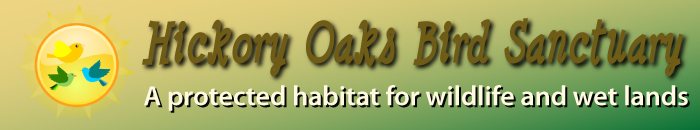
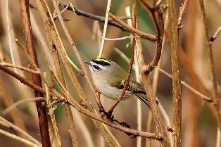

|  |
The Hickory Oaks Bird Sanctuary has one mission: to preserve and secure the future of as many species native to our area and those that pass through our area while on a migratory journey. We have a field study project that evaluates and assesses the biodiversity of our particular habitat. Our project researchers identify the various specifies that live here year long and those that use this as a temporary resting ground while traveling north or south for different climates during different seasons. The data we collect is shared with societies and sanctuaries to help track bird populations across our region of the country.
Besides the birds, our sanctuary is also home to many creatures and plants that serve as part of the ecosystem and food chain. We have a detailed management plan that can be inspected at our visitor's center. We hope that our sanctuary will serve as a home to the many species of birds and a place for visitors to relax and enjoy the beauty of these fragile creatures.